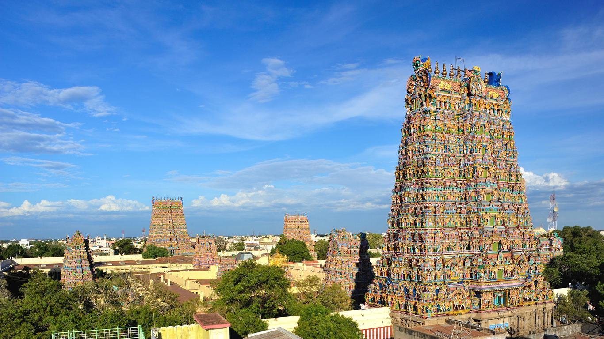

Arulmigu Meenakshi Sundareswarar Temple, also known as Arulmigu Meenakshi Amman Thirukkovil, is a historic Hindu temple located on the southern bank of the Vaigai River[3] in the temple city[4] of Madurai, Tamil Nadu, India. It is dedicated to the goddess Meenakshi, a form of Parvati, and her consort, Sundareshwarar, a form of Shiva.[5] The temple is at the centre of the ancient temple city of Madurai mentioned in the Tamil Sangam literature, with the goddess temple mentioned in 6th-century CE texts.[6] This temple is one of the Paadal Petra Sthalams, which are 275 temples of Shiva that are revered in the verses of Tamil Saiva Nayanars of the 6th-9th century CE. The west tower (gopuram) of the temple is the model based on which the Tamil Nadu State Emblem is designed.[7][8] Overview Yali in pillars at Madurai Meenakshi Amman Temple Madurai Meenakshi Sundareswarar temple was built by Pandyan Emperor Sadayavarman Kulasekaran I (1190 CE–1205 CE). He built the main Portions of the three-storeyed Gopuram at the entrance of Sundareswarar Shrine and the central portion of the Goddess Meenakshi Shrine are some of the earliest surviving parts of the temple. The traditional texts call him a poet-saint king, additionally credit him with a poem called Ambikai Malai, as well as shrines (koil) each for Natarajar and Surya near the main temple, Ayyanar in the east, Vinayagar in the south, Kariamalperumal in the west and Kali in the north. He also built a Mahamandapam. Kulasekara Pandya was also a poet and he composed a poem on Meenakshi named Ambikai Malai.[9] Maravarman Sundara Pandyan I built a gopuram in 1231, then called Avanivendaraman, later rebuilt, expanded and named as Sundara Pandya Thirukkopuram.[9] Chitra gopuram (W), also known as Muttalakkum Vayil, was built by Maravarman Sundara Pandyan II (1238-1251). This gopuram is named after the frescoes and reliefs that depict secular and religious themes of Hindu culture. Maravarman Sundara Pandyan II also added a pillared corridor to the Sundareswara shrine and the Sundara Pandyan Mandapam.[9] It was rebuilt after the 14th-century damage, its granite structure was renovated by Kumara Krishnappar after 1595.
